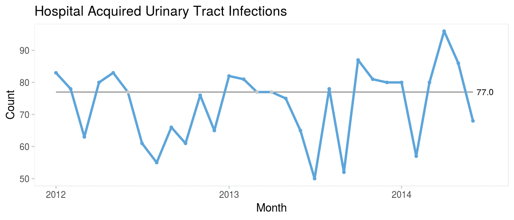
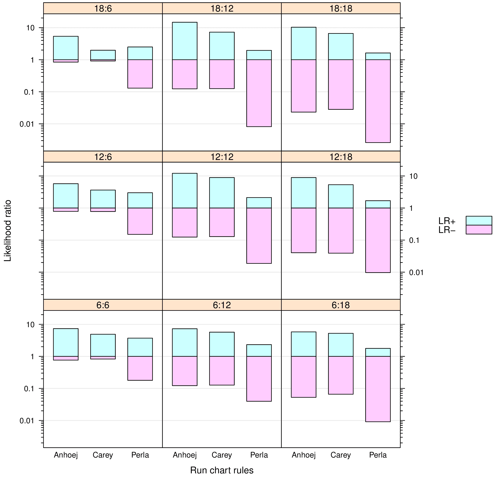
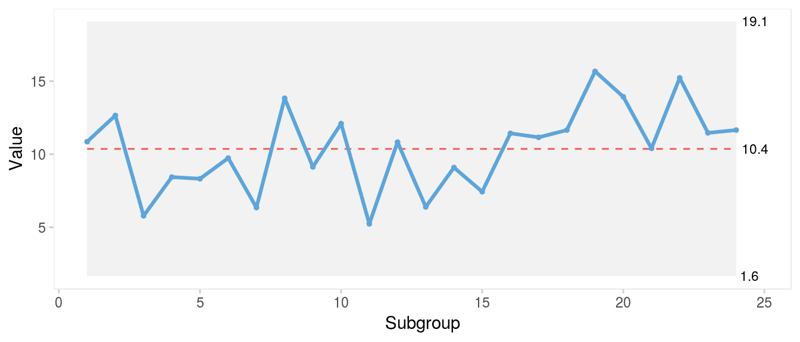

Understanding variation using runs analysis
Run charts are simple and powerful tools that help discriminate between random and non-random variation in data over time – for example, measures of healthcare quality.
Random variation is present in all natural processes. In a random process we cannot know the exact value of the next outcome, but from studying previous data we may predict the probability of future outcomes. So, a random process is predictable. Non-random variation, on the other hand, appears when something new, sometimes unexpected, starts to influence the process. This may be the result of intended changes made to improve the process or unintended process deterioration. The ability to tell random from non-random is crucial in quality improvement. One way of achieving this is runs analysis.
In general, a run is defined as a sequence of like items that is preceded and followed by one or more items of another type or by no item. Items can be heads and tails, odd and even numbers, numbers above and below a certain value, and so on.
Runs analysis is based on knowledge of the natural distributions and limits of run lengths and the number of runs in random processes. For example, if we toss a coin 10 times and get all heads (1 run of length 10), we would think that something non-random is affecting the game. Likewise, if a run chart includes a run of 10 data points on the same side of the centre line, we would start looking for an explanation.

Specifically, a run chart may be regarded as a coin tossing game where the data points represent heads and tails depending on their position above and below the centre line (ignoring data points that fall directly on the centre line). If the process is random, the data points will be randomly distributed around the centre (Figure 1A). A shift in process location will affect the distribution of data points and will eventually present itself by non-random patterns in data, which can be identified by statistical tests (Figure 1B).
Swed and Eisenhart studied the expected number of runs in random sequences. If the number of runs is too small or too large, it is an indication that the sequence is not random (1). To perform Swed and Eisenhart’s runs test one must either do rather complicated calculations or look up the limits for the expected number of runs in tables based on the total number of runs in the sequence and the number of items of each kind. Simplified tables for use with run charts have been developed for up to 60 data points (2). For more than 60 data points, the limits can be calculated using the normal approximation of the runs distribution function (3). For example, in a run chart with 24 data points, the expected number of runs (95% prediction limits) is 8-18.
Chen proposed an alternative to Swed and Eisenhart’s method. Instead of counting the number of runs, Chen counts the number of shifts in the sequence, that is when a value of one kind is followed by a value of another kind, which is one less than the number of runs (4). To avoid confusing Chen’s shifts in sequence with shifts in process location, I use the term crossings.
In run charts, crossings are easily counted by counting the number of times the graph crosses the median line. If the process is random, the chance of crossing or not crossing the median line between two adjacent data points is fifty-fifty. Thus, the total number of crossings has a binomial distribution, b(n−1,0.5), where n is the number of data points and 0.5 is the success probability.
We should consider whether we are interested in both sides of the distribution, too few and/or too many crossings. By nature, a shift in process location following process improvement or deterioration will result in fewer crossings than expected. But unusually many crossings (oscillation) is also a sign of non-random variation, which will appear if data are negatively autocorrelated, that is, if any high number tends to be followed by a low number and vice versa. However, oscillation is not an effect of the process shifting location, but most likely a result of a poorly designed measure or sampling issues (5 p175). Chen recommends using one-sided tests suited for the purpose of the analysis, that is whether one is interested in detecting shifts or oscillations (4).
For example, for a run chart with 24 data points we could choose the lower fifth percentile of the cumulative binomial distribution of 23 trials with a success probability of 0.5 as our critical value for the lower limits of crossings. This is easily calculated in R using the qbinom() function, qbinom(p = 0.05, size = 24 - 1, prob = 0.5) = 8, that is fewer than 8 crossings would be unusual and suggest that the process is shifting. In Figure 1B non-random variation in the form of a shift is identified by the fact that the chart has only 6 crossings when at least 8 would be expected from 24 random numbers.
The number of crossings (and runs) is inversely related to the lengths of runs. All things being equal, fewer crossings give longer runs and vice versa. Therefore, a test for unusually long runs is also commonly used as a means to identify shifts. A simple example is the “classic” rule of thumb of a run of 8 or more data points on the same side of the centre line. But just like the expected number of crossings, the expected length of the longest run depends on the total number of data points. In a run chart with, say, 100 data points, we should not be surprised to find a run of 8.
The distribution of longest runs has been described in detail by Schilling (6–8). The expected length of the longest run either above or below the median is log2(n), where n is the total number of data points, excluding data points that fall directly on the centre line. Approximately 95% of the longest runs are predicted to be within ±3 of the expected value. For the purpose of detecting a shift, we are interested in the upper prediction limit for longest run, which is log2(n)+3 (rounded to the nearest integer). For example, in a run chart of 24 data points, the upper 95% prediction limit for the longest run is round(log2(24) + 3) = 8, that is a run of more than 8 indicates a shift. Figure 1B has an unusually long run of 9 consecutive data points on the same side of the centre line.
A trend is a special form of a run, where like items are defined as data points that are bigger or smaller than the preceding one. The trend test was developed by Olmstead who provided tables and formulas for the probabilities of trends of different lengths depending on the total number of data points (9). For example, with less than 27 data points in total, the chance of having a trend of 6 or more data points going up or down is less than 5%. Note that Olmstead defines a trend as the number of jumps rather than the number of data points that surround the jumps.
In summary, there are (at least) four unusual run patterns that may be used to identify non-random variation in run charts:
- Too many runs
- Too few runs
- Too long runs
- Too long trends
The selection of rules and the choice of critical values to define too many, too few and too long have significant influence on the statistical properties of run charts. This is the subject of the following sections.
Signal confusion
Compared to control charts, surprisingly little has been published on the statistical properties of run charts (2, 10–13).
Carey introduced four run chart rules(10):
too much variability: more runs than expected, too little variability: fewer runs than expected, a shift: a run of 8 or more data points on the same side of the median (if less than 20 data points in total, a run of 7 suggests a shift), a trend: a run of 6 (or 7) data points going up or down. Carey provided a probability table showing the expected range of number of runs based on Swed’s work (1).
Perla, Provost, and Murray suggested a different set of run chart rules (2):
a shift: a run of 6 or more data points on the same side of the median, a trend: a run of 5 data points going up or down, too much variability: more runs than expected, too little variability: fewer runs than expected, an astronomical data point: an unusually large or small number. Perla’s rules differ from Carey’s mainly in that the critical values used to detect shifts and trends are relaxed. Perla notes that rules 1-4 are based on an α error of p<0.05. However, the source of this information is unclear. Also, Perla does not tell whether the α error applies to each individual rule or the set as a whole.
Finally, Olesen and I have proposed yet another set of run chart rules, which – for lack of a better term – I refer to as the Anhøj rules (11):
Shift rule: A shift is present if any run of consecutive data points on the same side of the median is longer than its prediction limit. Crossings rule: A crossings signal is present if the number of times the graph crosses the median is smaller than its prediction limit. The prediction limits for longest run and number of crossings both depend on the number of useful observations (data points not on the median) and are based on the works of Schilling (8) and Chen (4) as described in the previous section. Prediction limits for 10-60 data points are tabulated in the appendix.
In general, the Anhøj rules are more conservative (less sensitive, more specific) than the Carey and Perla rules. For example, with 24 data points the Anhøj rules take a run of 9 to signal a shift, while Perla and Carey only take 6 and 8, respectively (Figure 2).

Which rules to rule?
So, which run chart rules are best? To answer that question, we need to agree on what we mean by “best”. The purpose of any data display is to help us make good decisions. The link between data and decisions is prediction. As W Edwards Deming put it
A curve fitted to a set of points is of interest, not on account of the data fitted, but because of data not yet fitted. How will this curve fit the next batch of data?.
Specifically, regarding run charts, the question of interest is: how well does the centre (for example median) of historical data represent the centre of future data? In a random process, historical data reliably predicts future data. In a non-random process, this may or may not be the case. In practice, however, we cannot know in advance if a process is random or non-random, which is why we need statistical tests (rules) to help us make the distinction. But even the most reliable statistical tests make mistakes by sometimes overlooking the condition being tested for (false negative) and sometimes identifying a condition that is not there (false positive).
The questions of interest for run chart users are what is the chance that a chart with a positive test really represents non-random variation? and what is the chance that a chart with a negative test really represents random variation?
Likelihood ratios are diagnostic measures designed to answer such questions. The positive likelihood ratio, LR+, is the true positive rate divided by the false positive rate. The negative likelihood ratio, LR–, is the false negative rate divided by the true negative rate:
\[ LR+=TP/FP=sensitivity/(1−specificity) \] \[ LR−=FN/TN=(1−sensitivity)/specificity \] A likelihood ratio greater than 1 speaks in favour of the condition being tested for, which in our case is non-random variation, while a likelihood ratio less than 1 speaks against the presence of non-random variation. The further a likelihood ratio is from 1, the more or less likely is the presence of non-random variation.
Thus, likelihood ratios allow us to quantify the probability of non-random variation in data sequences and are useful quality characteristics of run (and control) chart rules.

In Run chart diagnostics I studied and compared likelihood ratios for the Perla, Carey and Anhøj rules (12) using simulated random data series to mimic run charts.
In half the simulations, a shift in process mean of 2 SD was introduced. So, for each simulated run chart the true presence or absence of a shift together with the presence or absence of signals from the runs analyses was known by the simulation program allowing the program to calculate likelihood ratios for each set of run chart rules.
For each simulated data series, the median was calculated using the first 6, 12 or 18 data points as baseline. And the shifts (when present) were introduced in the post-baseline period of 6, 12 or 18 data points. Consequently, there were nine combinations of baseline and post-baseline periods of different lengths allowing me to study the influence of these parameters on the diagnostic value of the tests.
For each of the nine possible combinations of baseline and post-baseline length, 1,000 simulations were performed with and 1,000 without post-baseline shift. In total, 18,000 run charts were simulated.
The results are summarised in Figure 3. Overall, the Anhøj and Carey rules perform “better” than the Perla rules – the Anhøj rules slightly but consistently better than the Carey rules. For run charts with 12 or more data points in the post-baseline period, the Anhøj and Carey rules perform very well with positive LRs around 10 and negative LRs around 0.1. The interpretation is, that given a positive test based on the Anhøj or Carey rules, the presence of a shift of 2 SD is about 10 times more likely than no shift; and given a negative test, a shift is about 10 times less likely than no shift.
In the previous paragraph, I use the term “better” to describe likelihood ratios with a wide and symmetric range centered around 1. Symmetry is important if we want equal protection from false positive and false negative results. The Perla rules have very low negative LRs meaning that negative tests with great certainty rule out shifts. However, they also have low positive LRs suggesting that positive tests are only 2–4 times more likely to be associated with true shifts in process performance than not.
The main reason for the low value of positive tests signalled by the Perla rules is the trend rule, which has been shown to add little more than false signals to runs analysis(14). In particular, the Perla version of the trend rule (5 point in a row) is flawed, having a false positive signal rate around 20%. But also Perla’s shift rule signalling when only 6 data points in a row is on the same side of the median is responsible for a significant number of false alarms.
qicharts2: Quality improvement charts with R
The {qicharts2} package for R(15) employs the Anhøj rules as standalone rules with run charts and as sensitising rules with control charts (Figure 3).
The latest stable version of {qicharts2} can be installed from CRAN:
install.packages('qicharts2')
The current development version can be installed from GitHub:
devtools::install_github('anhoej/qicharts2', build_vignettes = TRUE)
Along with the package comes a vignette that explains its use and provides several examples using actual healthcare data:
Run charts or control charts?
It is a common misunderstanding that run charts are inferior to control charts. As Figure 4 clearly demonstrates, the runs analysis is more sensitive to minor persistent shifts in data than are the control limits that only reacts to larger shifts in data. In a recent paper, Tore Wentzel-Larsen and I showed that runs analysis with the Anhøj rules is actually comparable to or even better than traditional control chart rules to identify minor to moderate and persistent shifts in data (16).

In my view, run and control charts are two sides of the same coin, and I refer to them collectively as statistical process control charts. I recommend to always use the Anhøj rules first together with a visual inspection of the run chart for other signs of non-random variation. If – and only if – the run chart finds random variation and the extra sensitivity of control limits to identify larger, possibly transient, shifts in data is needed, a control chart may be useful.
For improvement work, run charts are usually all we need, because we are expecting persistent shifts in data. For quality control – when a process has been stabilised at a satisfactory level – control limits are useful to quickly identify sudden larger unwanted shifts in data.
Conclusion
In conclusion, several sets of run chart rules with different diagnostic properties are currently available. The Perla rules recommended by the Institute for Healthcare Improvement (US) and widely used within the National Health Services (UK) have poor diagnostic value mainly due to a high false signal rate. The Anhøj and the Carey rules have better diagnostic properties that reliably tell random from non-random variation and balance the risk of false positive and false negative signals.
Appendix: Critical values for longest run and number of crossings
![Screenshot of critical values for longest run and number of crossings](img/appendix-1-critic
References
Swed FS, Eisenhart C. Tables for testing randomness of grouping in a sequence of alternatives. The Annals of Mathematical Statistics [Internet]. 1943 [cited 2018 Oct 7]; 14:66–87. Available from: http://www.jstor.org/stable/2236004 Accessed 24 March 2024.
Perla RJ, Provost LP, Murray SK. The run chart: A simple analytical tool for learning from variation in healthcare processes. BMJ Qual Saf [Internet]. 2011 [cited 2018 Oct 7]; 20:46–51. Available from: http://qualitysafety.bmj.com/content/20/1/46 Accessed 24 March 2024.
Provost LP, Murray SK. The health care data guide: Learning from data for improvement. San Francisco: John Wiley & Sons Inc.; 2011.
Chen Z. A note on the runs test. Model Assisted Statistics and Applications [Internet]. 2010 [cited 2018 Oct 7]; 5:73–7. Available from: https://content.iospress.com/articles/model-assisted-statistics-and-applications/mas00142 Accessed 24 March 2024.
Western Electric Company. Statistical quality control handbook. New York: Western Electric Company inc.; 1956.
Schilling MF. The longest run of heads. The College Mathematics Journal [Internet]. 1990 [cited 2018 Oct 7]; 21:196–207. Available from: https://www.jstor.org/stable/2686886 Accessed 24 March 2024.
Schilling MF. Long run predictions. Math Horizons [Internet]. 1994 [cited 2018 Oct 7]; 1:10–2. Available from: http://www.jstor.org/stable/25677964 Accessed 24 March 2024.
Schilling MF. The surprising predictability of long runs. Mathematics Magazine [Internet]. 2012 [cited 2018 Oct 7]; 85:141–9. Available from: http://www.jstor.org/stable/10.4169/math.mag.85.2.141 Accessed 24 March 2024.
Olmstead PS. Distribution of sample arrangements for runs up and down. The Annals of Mathematical Statistics [Internet]. 1946 [cited 2018 Oct 7]; 17:24–33. Available from: http://www.jstor.org/stable/2235901 Accessed 24 March 2024.
Carey RG. How do you know that your care is improving? Part 1: Basic concepts in statistical thinking. J Ambulatory Care Manage. 2002; 25(1):80–7.
Anhøj J, Olesen AV. Run charts revisited: A simulation study of run chart rules for detection of non-random variation in health care processes. PLoS ONE [Internet]. 2014 [cited 2018 Oct 7]. Available from: https://journals.plos.org/plosone/article?id=10.1371/journal.pone.0113825 Accessed 24 March 2024.
Anhøj J. Diagnostic value of run chart analysis: Using likelihood ratios to compare run chart rules on simulated data series. PLoS ONE [Internet]. 2015 [cited 2018 Oct 7]. Available from: http://journals.plos.org/plosone/article?id=10.1371/journal.pone.0121349 Accessed 24 March 2024.
Anhøj J, Wentzel-Larsen T. Sense and sensibility: On the diagnostic value of control chart rules for detection of shifts in time series data. BMC Medical Research Methodology [Internet]. 2018 [cited 2018 Oct 7]. Available from: https://bmcmedresmethodol.biomedcentral.com/articles/10.1186/s12874-018-0564-0 Accessed 24 March 2024.
Davis RB, Woodall WH. Performance of the control chart trend rule under linear shift. Journal of Quality Technology. 1988; 20:260–2.
Anhøj J. Qicharts2: Quality improvement charts for r. JOSS [Internet]. 2018 [cited 2018 Oct 7]. Available from: https://joss.theoj.org/papers/10.21105/joss.00699 Accessed 24 March 2024.
Anhøj J, Hellesøe A-MB. The problem with red, amber, green: The need to avoid distraction by random variation in organisational performance measures. BMJ Qual Saf [Internet]. 2016 [cited 2018 Oct 7]. Available from: https://qualitysafety.bmj.com/content/26/1/81 Accessed 24 March 2024.
This article is based on previously published, peer reviewed articles and large portions of the text has been copied from its sources and has been edited for NHS-R Style and to ensure running of code in Quarto.
This blog has been formatted to remove Latin Abbreviations.